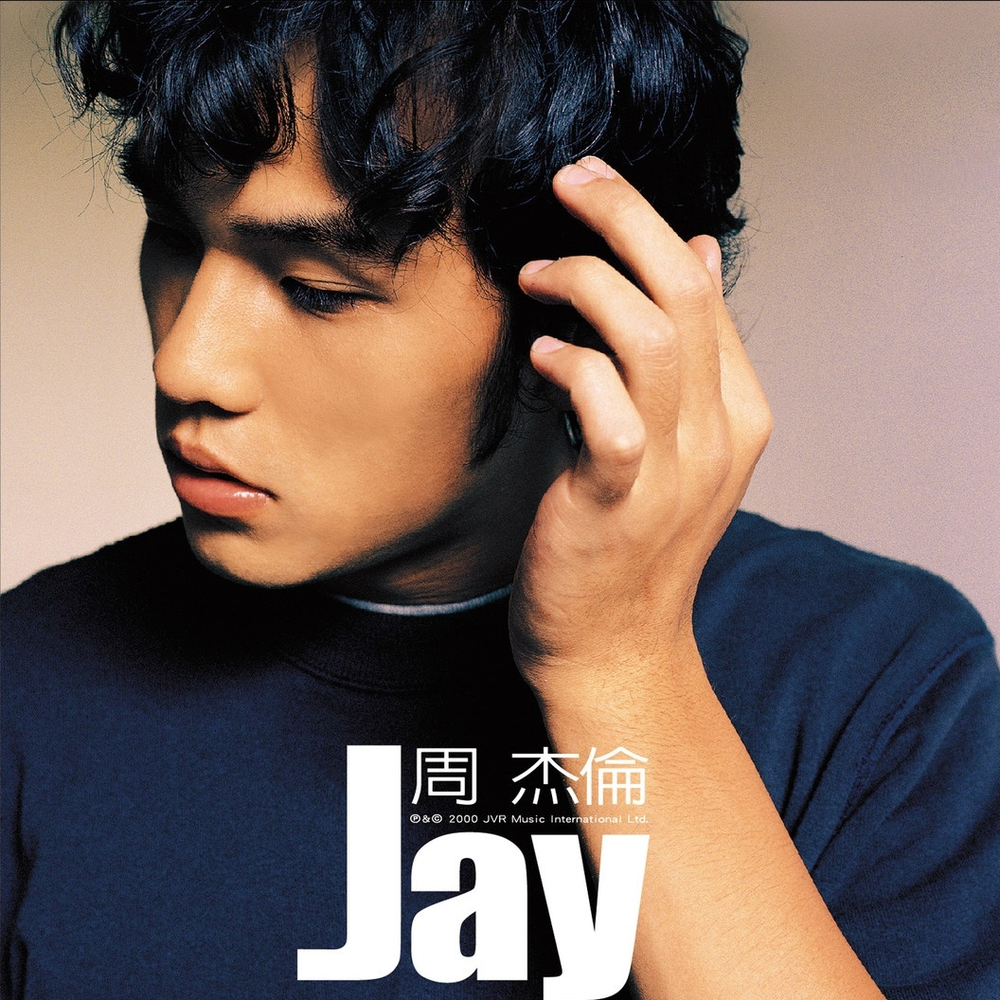

- jay2000
- 范特西2001
- 八度空间2002
- 叶惠美2003
- 七里香2004
- 十一月的肖邦2005
- 依然范特西2006
- 我很忙2007
- 魔杰座2008
- 跨时代2010
- 惊叹号2011
- 十二新作2012
- 哎呦不错哦2014
- 周杰伦的床边故事2016
-

整张专辑的曲风以R&B及New Hip-Hop为主，古典巴洛克式弦乐伴奏及Band的加入，形成了一种英国式的复古风格，更特别的是，西班牙式风格的弦乐演奏在专辑歌曲中表现出的意境极度逼近电影配乐。
主打歌《可爱女人》由徐若瑄填词、周杰伦谱曲、编曲，整首表现着一股R&B味道，简单的歌词却散发出无限的想象空间，摆脱市场上一般的芭乐曲风，但是却有着另一股新的感觉。另一首《黑色幽默》 则是深刻的描述着周杰伦内心感情世界的一环，剖白的记忆着女友离去时那一刻的心情，大陆十二人弦乐团加上传统旧式Band的表现，呈现出一种英式的复古风格。
专辑里混杂的大量黑人音乐曲风撼动华语乐坛的主流基石，同时这是一张在旋律基础上加上节奏发动机的双核唱片，用节奏和旋律重新校准了一首现代歌曲的平衡，让人有种比较新鲜和丰富的个性魅力。
虽然周董本人也会写词，而《Jay》里徐若萱也留下三首机灵劲十足的情歌歌词，但是如果没有方文山视野更为开阔、想像更为奇特的《娘子》、《斗牛》和《印地安老斑鸠》这样的词作，《Jay》这张专辑必然会逊色很多。虽然对于方文山这种也许没有思想意义的作品历来贬者居多，但不可否认他用这种题材开辟了一种独特的的思路。更为重要的是方文山所运用的诸如悬幻文学、街头篮球这样看似无聊的主题，它并不是无来由的根、从石头缝里蹦出来的孙猴子，它们基本上符合了80一代的时代特征。有了核心上的变革，这张专辑在细节上自然也出现了异于上世纪华语主流音乐的裂变。尤其是以《伊斯坦堡》、《龙卷风》为代表的情歌就凸现出这种变化：情歌不再是单一的K房情歌，你唱我唱大家唱的样板戏，而是尽可能突出了80一代情感思维新特征的时代恋曲。
当然这种周董式的个性，不可避免的随着他的走红而使得它会在潮流洗礼中漫漫演变成共性，但却并不能因此抹杀《Jay》专辑在当时于独立性上异潮流而行的勇气和动机，尽管它同样是一张商业唱片，但至少它商出了挣扎和反抗，也商出了改良和再造，而这绝对要比那些商得毫无骨气、甚至媚态尽现的唱片更值得人们尊敬。